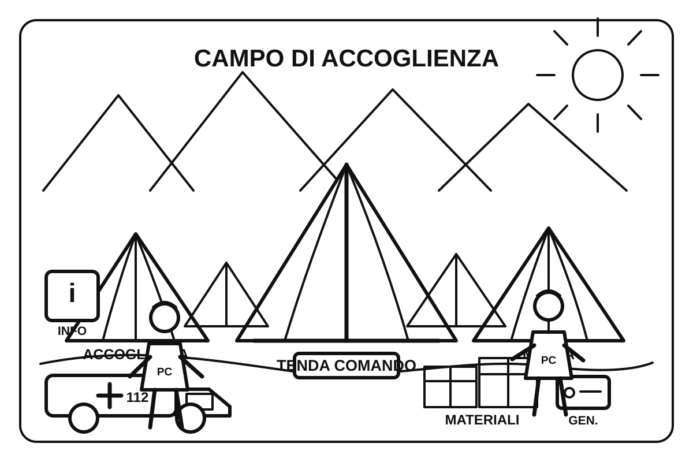

Protezione CivileGruppo Comunale Volontari — Genzano di Roma
Bambini · 3-5 anni
Colora il campo della Protezione Civile
3-5 anni⛺ Colora le tende dove le persone trovano riparo dopo un'emergenza. Guarda il punto informazioni, i volontari e i materiali.

Le tende aiutano le persone ad avere un posto sicuro durante un'emergenza.